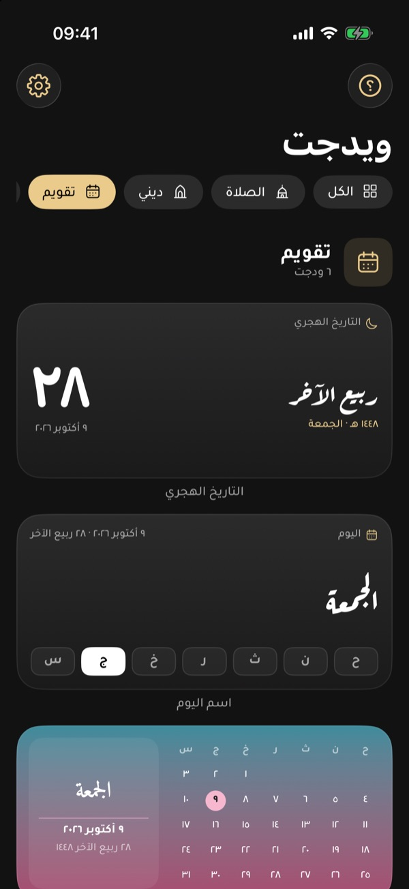
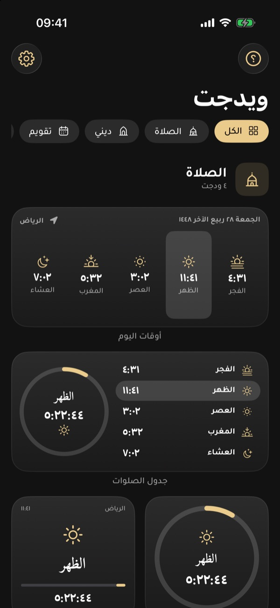
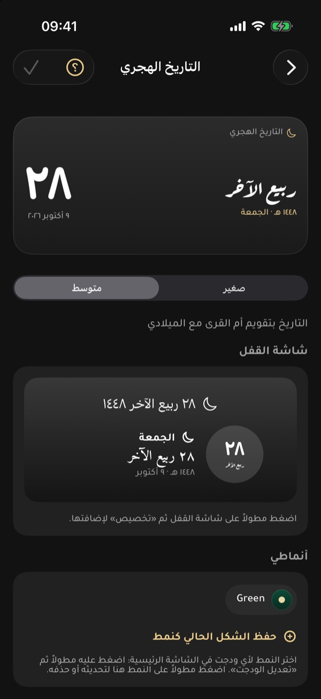
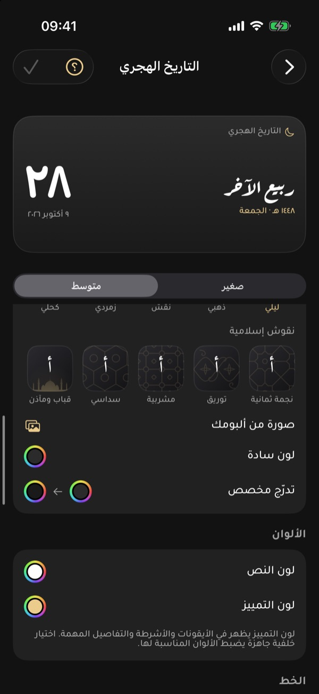
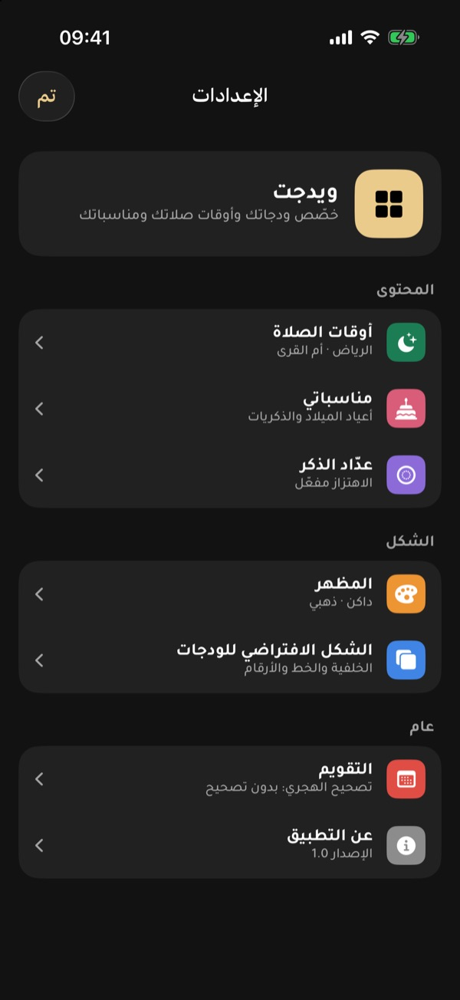

شاشتك الرئيسية،
بلمسة إسلامية
مواقيت الصلاة والأذان، الأذكار وآية اليوم بخط المصحف، التقويم الهجري، ومناسباتك الخاصة. ودجات أنيقة تخصّصها بالكامل.



كل اللي تحتاجه، بنظرة وحدة
بدون ما تفتح التطبيق. اختر الودجت والحجم، وخلّه يشتغل.
مواقيت الصلاة والأذان
حسب موقعك بطريقة أم القرى أو غيرها، مع عد تنازلي حي وتنبيه قبل الأذان.
اتجاه القبلة
بوصلة تشير للقبلة من مكانك وتنبهك لما تتجه لها، بدون إنترنت.
الأذكار وآية اليوم
أذكار الصباح من حصن المسلم، وآية يومية بنص مجمع الملك فهد وخط المصحف.
عداد الذكر
استغفار وتسبيح وتهليل وصلاة على النبي ﷺ، تعدّها بضغطة من الشاشة.
التقويم الهجري
التاريخان واسم اليوم بالخط العربي، وشهر كامل هجري أو ميلادي.
المناسبات
رمضان والأعياد واليوم الوطني، وأعياد ميلادك وذكرياتك مع تذكير قبل يوم.
تخصيص كامل
خلفيات ونقوش إسلامية وصورك، وألوان وخطوط عربية وأرقام عربية أو إنجليزية.
الصحة قريبًا
خطواتك ونشاطك اليومي من تطبيق صحة Apple، بإذنك فقط.
من داخل التطبيق
لقطات حقيقية من التطبيق. اسحب لتشوف المزيد.



طريقة إضافة الودجت
أقل من دقيقة، ومرة وحدة بس.
اضغط مطولاً
على مكان فاضي في الشاشة الرئيسية حتى تهتز الأيقونات.
اضغط «تعديل» ثم «إضافة ودجت»
من أعلى الشاشة.
ابحث عن «ويدجت»
واختر الودجت اللي تبيه، واسحب لتختار الحجم.
خصّصه
اضغط مطولاً على الودجت ثم «تعديل الودجت» لتختار الذكر أو المناسبة أو النمط.
افتح شاشة القفل
واضغط مطولاً عليها بعد ما تفتح الجوال بوجهك أو رمزك.
اضغط «تخصيص»
ثم اختر «شاشة القفل».
اضغط مكان الودجات
تحت الساعة، أو السطر فوقها.
اختر من «ويدجت»
الصلاة القادمة، أو التاريخ الهجري، أو عداد الذكر، ثم «تم».
أنواع الودجات
كل ودجت يتخصّص بالكامل. مجاني متاح للجميع، وبلس مع الاشتراك.
الصلاة
مواقيت حسب موقعك وعد تنازلي حيديني
أذكار وآيات وعدادتقويم
هجري وميلادي بخط عربيمناسبات
عدّادات تنازلية ومناسباتك الخاصةالصحة
من تطبيق صحة Apple، بإذنك فقطرياضة
فريقك المفضلودجات الصحة
خطواتك ومسافتك وسعراتك على الشاشة الرئيسية، مقروءة من تطبيق «صحة» Apple.
- اختياري، ولا يُطلب إلا لما تضيف ودجت صحة
- القراءة على جهازك فقط، ولا تُرسل لأي خادم
- لا تُستخدم للإعلانات ولا تُشارك مع أحد
البيانات اللي يحتاجها التطبيق
كل إذن له سبب واضح، وكلها اختيارية. بدونها يشتغل التطبيق بالقيم الافتراضية.
الموقع
لحساب مواقيت الصلاة واتجاه القبلة لمدينتك. يُطلب مرة وحدة أثناء الاستخدام، ويُحفظ على جهازك.
بدونه: مواقيت مكة المكرمةالتنبيهات
لتنبيه الأذان، وأذكار بعد الصلاة، وتذكير المناسبات قبل يوم. تُجدول على جهازك.
بدونها: الودجات تشتغل عاديالبوصلة
لتوجيه سهم القبلة حسب اتجاه جوالك. القراءة لحظية ولا تُخزن.
بدونها: الاتجاه بالدرجاتصورة من ألبومك
لو اخترت صورة خلفية للودجت. تختارها أنت، والتطبيق ما يشوف غيرها.
بدون إذن للألبوم كاملصحة Apple قريبًا
قراءة الخطوات والمسافة والسعرات النشطة لودجات الصحة فقط.
قراءة فقط، لكل نوع بإذن منفصلالمشتريات
عبر App Store من Apple. ما نستلم بيانات الدفع، ونتحقق من الاشتراك فقط.
الإلغاء من إعدادات Appleمجاني، مع خيار بلس
المزايا الأساسية مجانية للجميع، والاشتراك يفتح كل الودجات والتخصيص.
مجاني
- مواقيت الصلاة وتنبيه الأذان والقبلة
- ذكر الصباح وآية اليوم وعداد الذكر
- التاريخ الهجري واسم اليوم
- عدّادات رمضان والأعياد والمناسبات الوطنية
- الخلفيات الأساسية
- ودجات بلس والنقوش الإسلامية
ويدجت بلس
- كل ما في المجاني
- كل الودجات بكل الأحجام
- النقوش الإسلامية وصور المساجد وصورك
- مناسباتي وأعياد الميلاد مع التذكير
- أنماط محفوظة لكل ودجت
- ودجات الصحة عند إطلاقها
يُدفع عبر App Store ويتجدد تلقائيًا، وتقدر تلغيه متى ما بغيت من إعدادات حسابك.
الأسئلة الشائعة
ما لقيت جوابك؟ راسلنا.
هل التطبيق مجاني؟
نعم، المزايا الأساسية مجانية بالكامل: المواقيت والأذان والقبلة والأذكار والتقويم الهجري والعدادات. «ويدجت بلس» اشتراك اختياري يفتح باقي الودجات والتخصيص.
ليش الودجت ما يتحدث؟
افتح التطبيق مرة بعد التثبيت، وتأكد أن «تحديث التطبيق في الخلفية» مفعّل له، وأن وضع توفير الطاقة غير مفعّل. iOS يحدد توقيت تحديث الودجات، والعد التنازلي للصلاة يتحدّث كل ثانية بدونه.
المواقيت تختلف عن مسجدنا، وش أسوي؟
من الإعدادات ← أوقات الصلاة: تأكد من الموقع وطريقة الحساب (أم القرى افتراضيًا)، ثم استخدم «تعديل الدقائق» لتقديم أو تأخير أي صلاة حتى تطابق أذان مسجدك.
هل يحتاج إنترنت؟
لا. المواقيت والقبلة والأذكار والآيات والتقويم كلها تُحسب وتُعرض على جهازك. الإنترنت يُستخدم فقط لتحديد اسم المدينة، ولبيانات المباريات مستقبلًا.
من وين نص القرآن والأذكار؟
آية اليوم من نص مجمع الملك فهد لطباعة المصحف الشريف (رواية حفص) وبخطه، بدون أي تعديل. والأذكار من حصن المسلم. وإذا لاحظت خطأ، أرسل لنا لقطة الشاشة ونصححه بإذن الله.
التاريخ الهجري يختلف يوم عن الرؤية
التطبيق يتبع تقويم أم القرى. من الإعدادات ← التقويم تقدر تزيد أو تنقص يومًا أو يومين، ويتعدّل التاريخ وعداد رمضان والعيد معه.
كيف أضيف عيد ميلاد أو مناسبة؟
من الإعدادات ← مناسباتي اضغط «+» واختر النوع والتاريخ، وفعّل «ذكّرني قبل يوم» لو تبي تنبيه. بعدها أضف ودجت «مناسبة خاصة» واختر المناسبة من «تعديل الودجت». لأعياد الميلاد يُحسب العمر تلقائيًا.
أقدر أخلي لكل ودجت شكل مختلف؟
نعم. خصّص الشكل من صفحة الودجت واحفظه كنمط باسم، ثم اختر النمط لأي ودجت في الشاشة الرئيسية من «تعديل الودجت».
هل التطبيق يقرأ بيانات صحتي؟
لا، إلا إذا أضفت ودجت صحة (قريبًا) ووافقت أنت على كل نوع بيانات. القراءة على جهازك فقط، ولا تُرسل أو تُستخدم لأي غرض آخر، وتقدر تلغي الإذن من تطبيق «صحة».
كيف ألغي الاشتراك أو أسترجع مشترياتي؟
الإلغاء من: الإعدادات ← اسمك ← الاشتراكات ← ويدجت. ولاسترجاع مشترياتك على جهاز جديد، استخدم «استعادة المشتريات» داخل التطبيق بنفس حساب Apple.